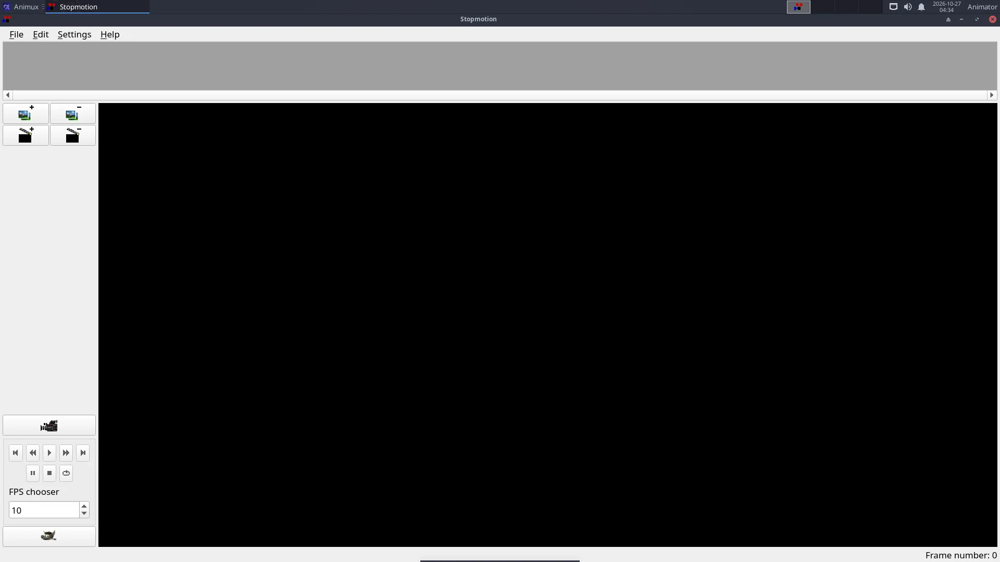

| Stopmotion (Linux Stopmotion) | |
|---|---|
| Menu | StopMotion Animation → Stopmotion |
| Version | 0.8.6 |
| Command | stopmotion |
| Good for | Beginner |
| Files | .dat project; image folders; exports video |
| Licence | GPL-2.0 |
| Website | linuxstopmotion.org |
Stop motion is animation with real objects: clay figures, LEGO, paper cut-outs, toys. You move the object a tiny bit, take a photo, move it again, take another. Stopmotion helps you take the photos and line up each new pose with the previous one.


What you need#
- A webcam (any USB webcam that works on Linux), or a camera whose photos you copy in afterwards.
- A tripod or something that holds the camera completely still.
- Steady light: close the curtains and use lamps. Daylight changes and makes the film flicker.
Capturing with a webcam#
- Plug in the webcam and start StopMotion Animation → Stopmotion.
- Settings → Preferences → Video Import: choose the device (
/dev/video0is usually the first webcam). - Click the camera button to start the live view.
- Turn on onion skinning (mix slider: 1 or 2 previous frames). The last photo shows faintly over the live image.
- Move your figure a little, then press Space (or the capture button) to take a frame. Repeat.
- Press Play to check the movement.
Twelve frames per second is a good start; 24 is smoother but needs twice as many photos.
Photos from a camera#
Edit → Add frames (or drag image files into the frame list) to add photos taken with a camera or phone. Rename them in order first (for example 0001.jpg, 0002.jpg).
Sound and export#
- Add sound with the Sound button of a scene.
- File → Export → Video writes a video file (it uses FFmpeg); File → Export → Cinelerra sends the frames to Cinelerra.
- Or export the frames and put them together with FFmpeg:
ffmpeg -framerate 12 -i %04d.jpg -c:v libx264 -pix_fmt yuv420p -crf 18 film.mp4
In a virtual machine#
The VM must pass the webcam through: in VirtualBox install the Extension Pack and use Devices → Webcams. See VirtualBox.
Tutorial: Stop motion with a webcam.